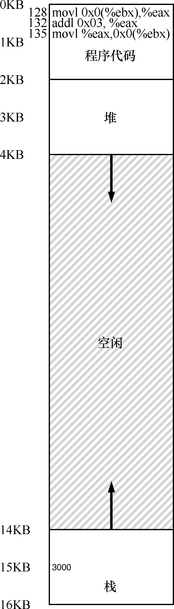
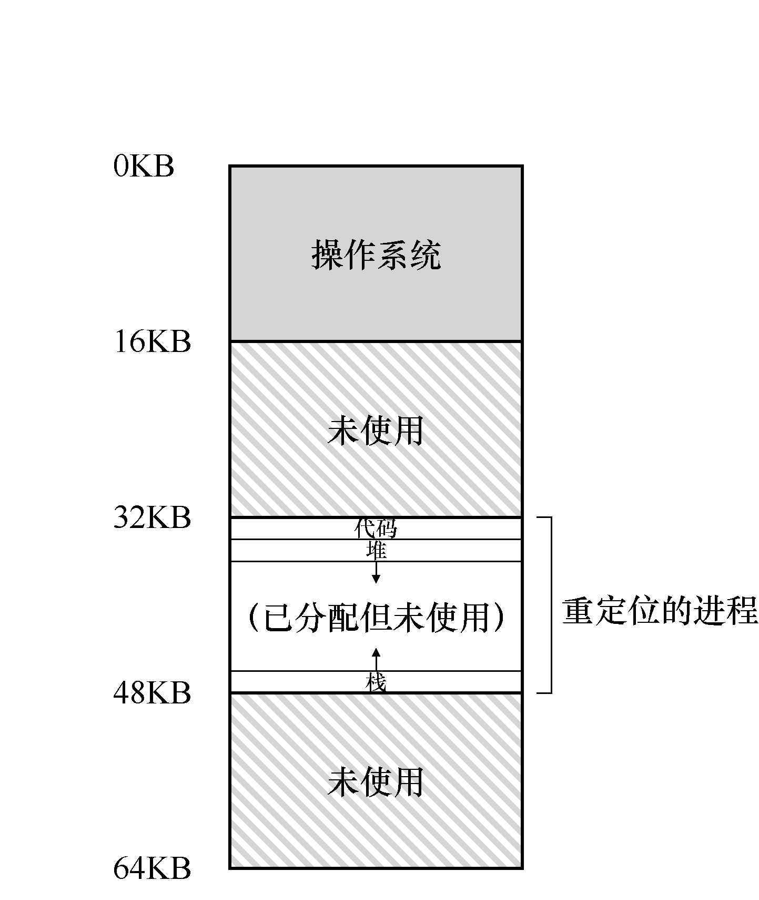
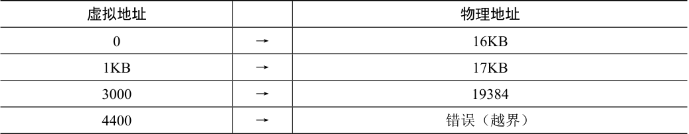
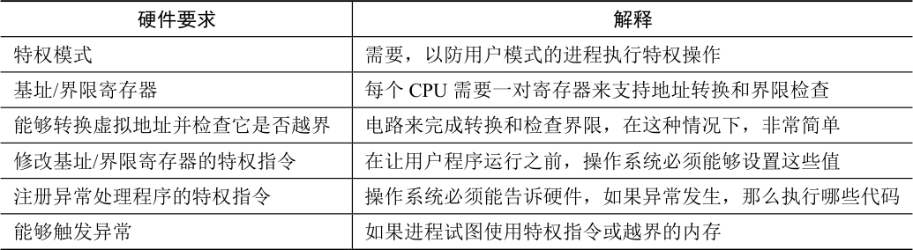
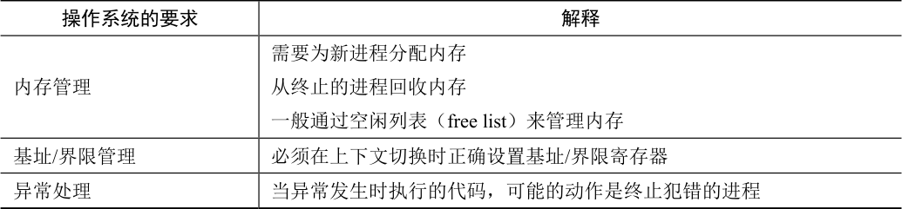
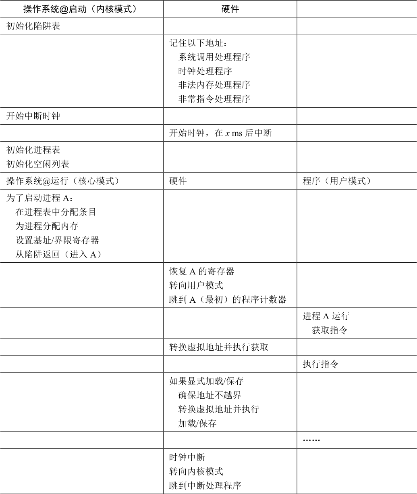
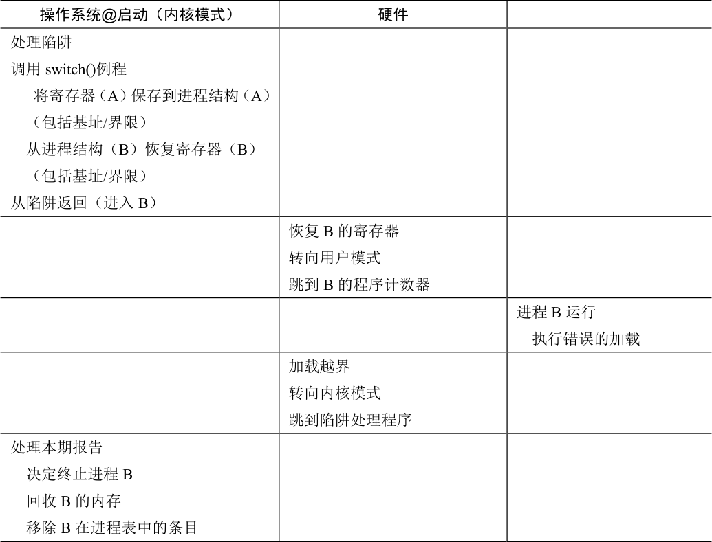

在实现CPU 虚拟化时，我们遵循的一般准则被称为受限直接访问（Limited Direct Execution，LDE）。LDE 背后的想法很简单：让程序运行的大部分指令直接访问硬件，只在一些关键点（如进程发起系统调用或发生时钟中断）由操作系统介入来确保“在正确时间，正确的地点，做正确的事”。为了实现高效的虚拟化，操作系统应该尽量让程序自己运行，同时通过在关键点的及时介入（interposing），来保持对硬件的控制。高效和控制是现代操作系统的两个主要目标。
在实现虚拟内存时，我们将追求类似的战略，在实现高效和控制的同时，提供期望的虚拟化。高效决定了我们要利用硬件的支持，这在开始的时候非常初级（如使用一些寄存器），但会变得相当复杂（比如我们会讲到的TLB、页表等）。控制意味着操作系统要确保应用程序只能访问它自己的内存空间。因此，要保护应用程序不会相互影响，也不会影响操作系统，我们需要硬件的帮助。最后，我们对虚拟内存还有一点要求，即灵活性。具体来说，我们希望程序能以任何方式访问它自己的地址空间，从而让系统更容易编程。所以，关键问题在于：
关键问题：如何高效、灵活地虚拟化内存
如何实现高效的内存虚拟化？如何提供应用程序所需的灵活性？如何保持控制应用程序可访问的内存位置，从而确保应用程序的内存访问受到合理的限制？如何高效地实现这一切？
我们利用了一种通用技术，有时被称为基于硬件的地址转换（hardware-based address translation），简称为地址转换（address translation）。它可以看成是受限直接执行这种一般方法的补充。利用地址转换，硬件对每次内存访问进行处理（即指令获取、数据读取或写入），将指令中的虚拟（virtual）地址转换为数据实际存储的物理（physical）地址。因此，在每次内存引用时，硬件都会进行地址转换，将应用程序的内存引用重定位到内存中实际的位置。
当然，仅仅依靠硬件不足以实现虚拟内存，因为它只是提供了底层机制来提高效率。操作系统必须在关键的位置介入，设置好硬件，以便完成正确的地址转换。因此它必须管理内存（manage memory），记录被占用和空闲的内存位置，并明智而谨慎地介入，保持对内存使用的控制。
同样，所有这些工作都是为了创造一种美丽的假象：每个程序都拥有私有的内存，那里存放着它自己的代码和数据。虚拟现实的背后是丑陋的物理事实：许多程序其实是在同一时间共享着内存，就像CPU（或多个CPU）在不同的程序间切换运行。通过虚拟化，操作系统（在硬件的帮助下）将丑陋的机器现实转化成一种有用的、强大的、易于使用的抽象。
15.1 假设¶
我们对内存虚拟化的第一次尝试非常简单，甚至有点可笑。如果你觉得可笑就笑吧，很快就轮到操作系统嘲笑你了。当你试图理解TLB 的换入换出、多级页表，和其他技术一样有奇迹之处的时候。不喜欢操作系统嘲笑你？很不幸，但这就是操作系统的运行方式。
具体来说，我们先假设用户的地址空间必须连续地放在物理内存中。同时，为了简单，我们假设地址空间不是很大，具体来说，小于物理内存的大小。最后，假设每个地址空间的大小完全一样。别担心这些假设听起来不切实际，我们会逐步地放宽这些假设，从而得到现实的内存虚拟化。
15.2 一个例子¶
为了更好地理解实现地址转换需要什么，以及为什么需要，我们先来看一个简单的例子。设想一个进程的地址空间如图15.1 所示。这里我们要检查一小段代码，它从内存中加载一个值，对它加3，然后将它存回内存。你可以设想，这段代码的C 语言形式可能像这样：
void func() {
int x;
x = x + 3; // this is the line of code we are interested in
编译器将这行代码转化为汇编语句，可能像下面这样（x86 汇编）。我们可以用Linux的objdump 或者Mac 的otool 将它反汇编：
128: movl 0x0(%ebx), %eax ;load 0+ebx into eax
132: addl $0x03, %eax ;add 3 to eax register
135: movl %eax, 0x0(%ebx) ;store eax back to mem
这段代码相对简单，它假定x 的地址已经存入寄存器ebx，之后通过movl 指令将这个地址的值加载到通用寄存器eax（长字移动）。下一条指令对eax 的内容加3。最后一条指令将eax 中的值写回到内存的同一位置。
提示：介入（Interposition）很强大
介入是一种很常见又很有用的技术，计算机系统中使用介入常常能带来很好的效果。在虚拟内存中，硬件可以介入到每次内存访问中，将进程提供的虚拟地址转换为数据实际存储的物理地址。但是，一般化的介入技术有更广阔的应用空间，实际上几乎所有良好定义的接口都应该提供功能介入机制，以便增加功能或者在其他方面提升系统。这种方式最基本的优点是透明（transparency），介入完成时通常不需要改动接口的客户端，因此客户端不需要任何改动。
在图15.1 中，可以看到代码和数据都位于进程的地址空间，3 条指令序列位于地址128（靠近头部的代码段），变量x 的值位于地址15KB（在靠近底部的栈中）。如图15.1 所示，x的初始值是3000。
如果这3 条指令执行，从进程的角度来看，发生了以下几次内存访问：
从地址128 获取指令；
执行指令（从地址15KB 加载数据）；
从地址132 获取命令；
执行命令（没有内存访问）；
从地址135 获取指令；
执行指令（新值存入地址15KB）。
从程序的角度来看，它的地址空间（address space）从0 开始到16KB 结束。它包含的所有内存引用都应该在这个范围内。然而，对虚拟内存来说，操作系统希望将这个进程地址空间放在物理内存的其他位置，并不一定从地址0 开始。因此我们遇到了如下问题：怎样在内存中重定位这个进程，同时对该进程透明（transparent）？怎么样提供一种虚拟地址空间从0 开始的假象，而实际上地址空间位于另外某个物理地址？
图15.2 展示了一个例子，说明这个进程的地址空间被放入物理内存后可能的样子。从图15.2 中可以看到，操作系统将第一块物理内存留给了自己，并将上述例子中的进程地址空间重定位到从32KB 开始的物理内存地址。剩下的两块内存空闲（16～32KB 和48～64KB）。

图15.1 进程及其地址空间图15.2 物理内存和单个重定位的进程

原书第 102 页图示 2
15.3 动态（基于硬件）重定位¶
为了更好地理解基于硬件的地址转换，我们先来讨论它的第一次应用。在20 世纪50年代后期，它在首次出现的时分机器中引入，那时只是一个简单的思想，称为基址加界限机制（base and bound），有时又称为动态重定位（dynamic relocation），我们将互换使用这两个术语[SS74]。
具体来说，每个CPU 需要两个硬件寄存器：基址（base）寄存器和界限（bound）寄存器，有时称为限制（limit）寄存器。这组基址和界限寄存器，让我们能够将地址空间放在物理内存的任何位置，同时又能确保进程只能访问自己的地址空间。
采用这种方式，在编写和编译程序时假设地址空间从零开始。但是，当程序真正执行时，操作系统会决定其在物理内存中的实际加载地址，并将起始地址记录在基址寄存器中。在上面的例子中，操作系统决定加载在物理地址32KB 的进程，因此将基址寄存器设置为这个值。
当进程运行时，有趣的事情发生了。现在，该进程产生的所有内存引用，都会被处理器通过以下方式转换为物理地址：
physical address = virtual address + base
补充：基于软件的重定位
在早期，在硬件支持重定位之前，一些系统曾经采用纯软件的重定位方式。基本技术被称为静态重定位（static relocation），其中一个名为加载程序（loader）的软件接手将要运行的可执行程序，将它的地址重写到物理内存中期望的偏移位置。
例如，程序中有一条指令是从地址1000 加载到寄存器（即movl 1000，%eax），当整个程序的地址空间被加载到从3000（不是程序认为的0）开始的物理地址中，加载程序会重写指令中的地址（即movl 4000, %eax），从而完成简单的静态重定位。
然而，静态重定位有许多问题，首先也是最重要的是不提供访问保护，进程中的错误地址可能导致对其他进程或操作系统内存的非法访问，一般来说，需要硬件支持来实现真正的访问保护[WL+93]。静态重定位的另一个缺点是一旦完成，稍后很难将内存空间重定位到其他位置 [M65]。
进程中使用的内存引用都是虚拟地址（virtual address），硬件接下来将虚拟地址加上基址寄存器中的内容，得到物理地址（physical address），再发给内存系统。
为了更好地理解，让我们追踪一条指令执行的情况。具体来看前面序列中的一条指令：
128: movl 0x0(%ebx), %eax
程序计数器（PC）首先被设置为128。当硬件需要获取这条指令时，它先将这个值加上基址寄存器中的32KB(32768)，得到实际的物理地址32896，然后硬件从这个物理地址获取指令。接下来，处理器开始执行该指令。这时，进程发起从虚拟地址15KB 的加载，处理器同样将虚拟地址加上基址寄存器内容（32KB），得到最终的物理地址47KB，从而获得需要的数据。
将虚拟地址转换为物理地址，这正是所谓的地址转换（address translation）技术。也就是说，硬件取得进程认为它要访问的地址，将它转换成数据实际位于的物理地址。由于这种重定位是在运行时发生的，而且我们甚至可以在进程开始运行后改变其地址空间，这种技术一般被称为动态重定位（dynamic relocation）[M65]。
提示：基于硬件的动态重定位
在动态重定位的过程中，只有很少的硬件参与，但获得了很好的效果。一个基址寄存器将虚拟地址转换为物理地址，一个界限寄存器确保这个地址在进程地址空间的范围内。它们一起提供了既简单又高效的虚拟内存机制。
现在你可能会问，界限（限制）寄存器去哪了？不是基址加界限机制吗？正如你猜测的那样，界限寄存器提供了访问保护。在上面的例子中，界限寄存器被置为16KB。如果进程需要访问超过这个界限或者为负数的虚拟地址，CPU 将触发异常，进程最终可能被终止。界限寄存器的用处在于，它确保了进程产生的所有地址都在进程的地址“界限”中。
这种基址寄存器配合界限寄存器的硬件结构是芯片中的（每个CPU 一对）。有时我们将CPU 的这个负责地址转换的部分统称为内存管理单元（Memory Management Unit，MMU）。随着我们开发更复杂的内存管理技术，MMU 也将有更复杂的电路和功能。
关于界限寄存器再补充一点，它通常有两种使用方式。在一种方式中（像上面那样），它记录地址空间的大小，硬件在将虚拟地址与基址寄存器内容求和前，就检查这个界限。另一种方式是界限寄存器中记录地址空间结束的物理地址，硬件在转化虚拟地址到物理地址之后才去检查这个界限。这两种方式在逻辑上是等价的。简单起见，我们这里假设采用第一种方式。
转换示例¶
为了更好地理解基址加界限的地址转换的详细过程，我们来看一个例子。设想一个进程拥有4KB 大小地址空间（是的，小得不切实际），它被加载到从16KB 开始的物理内存中。一些地址转换结果见表15.1。

表15.1 地址转换结果
表格文字
| 虚拟地址 | 物理地址 | |
|---|---|---|
| 0 | → | 16KB |
| 1KB | → | 17KB |
| 3000 | → | 19384 |
| 4400 | → | 错误（越界） |
从例子中可以看到，通过基址加虚拟地址（可以看作是地址空间的偏移量）的方式，很容易得到物理地址。虚拟地址“过大”或者为负数时，会导致异常。
补充：数据结构——空闲列表
操作系统必须记录哪些空闲内存没有使用，以便能够为进程分配内存。很多不同的数据结构可以用于这项任务，其中最简单的（也是我们假定在这里采用的）是空闲列表（free list）。它就是一个列表，记录当前没有使用的物理内存的范围。
15.4 硬件支持：总结¶
我们来总结一下需要的硬件支持（见表15.2）。首先，正如在CPU 虚拟化的章节中提到的，我们需要两种CPU 模式。操作系统在特权模式（privileged mode，或内核模式，kernel mode），可以访问整个机器资源。应用程序在用户模式（user mode）运行，只能做有限的操作。只要一个位，也许保存在处理器状态字（processor status word）中，就能说明当前的CPU 运行模式。在一些特殊的时刻（如系统调用、异常或中断），CPU 会切换状态。

表15.2 动态重定位：硬件要求
表格文字
| 硬件要求 | 解释 |
|---|---|
| 特权模式 | 需要，以防用户模式的进程执行特权操作 |
| 基址/界限寄存器 | 每个CPU 需要一对寄存器来支持地址转换和界限检查 |
| 能够转换虚拟地址并检查它是否越界 | 电路来完成转换和检查界限，在这种情况下，非常简单 |
| 修改基址/界限寄存器的特权指令 | 在让用户程序运行之前，操作系统必须能够设置这些值 |
| 注册异常处理程序的特权指令 | 操作系统必须能告诉硬件，如果异常发生，那么执行哪些代码 |
| 能够触发异常 | 如果进程试图使用特权指令或越界的内存 |
硬件还必须提供基址和界限寄存器（base and bounds register），因此每个CPU 的内存管理单元（Memory Management Unit，MMU）都需要这两个额外的寄存器。用户程序运行时，硬件会转换每个地址，即将用户程序产生的虚拟地址加上基址寄存器的内容。硬件也必须能检查地址是否有用，通过界限寄存器和CPU 内的一些电路来实现。
硬件应该提供一些特殊的指令，用于修改基址寄存器和界限寄存器，允许操作系统在切换进程时改变它们。这些指令是特权（privileged）指令，只有在内核模式下，才能修改这些寄存器。想象一下，如果用户进程在运行时可以随意更改基址寄存器，那么用户进程可能会造成严重破坏1。想象一下吧！然后迅速将这些阴暗的想法从你的头脑中赶走，因为它们很可怕，会导致噩梦。
最后，在用户程序尝试非法访问内存（越界访问）时，CPU必须能够产生异常（exception）。在这种情况下，CPU 应该阻止用户程序的执行，并安排操作系统的“越界”异常处理程序（exception handler）去处理。操作系统的处理程序会做出正确的响应，比如在这种情况下终止进程。类似地，如果用户程序尝试修改基址或者界限寄存器时，CPU 也应该产生异常，并调用“用户模式尝试执行特权指令”的异常处理程序。CPU 还必须提供一种方法，来通知它这些处理程序的位置，因此又需要另一些特权指令。
15.5 操作系统的问题¶
为了支持动态重定位，硬件添加了新的功能，使得操作系统有了一些必须处理的新问题。硬件支持和操作系统管理结合在一起，实现了一个简单的虚拟内存。具体来说，在一些关键的时刻操作系统需要介入，以实现基址和界限方式的虚拟内存，见表15.3。
第一，在进程创建时，操作系统必须采取行动，为进程的地址空间找到内存空间。由于我们假设每个进程的地址空间小于物理内存的大小，并且大小相同，这对操作系统来说很容易。它可以把整个物理内存看作一组槽块，标记了空闲或已用。当新进程创建时，操作系统检索这个数据结构（常被称为空闲列表，free list），为新地址空间找到位置，并将其标记为已用。如果地址空间可变，那么生活就会更复杂，我们将在后续章节中讨论。
我们来看一个例子。在图15.2 中，操作系统将物理内存的第一个槽块分配给自己，然后将例子中的进程重定位到物理内存地址32KB。另两个槽块（16～32KB，48～64KB）空闲，因此空闲列表（free list）就包含这两个槽块。
第二，在进程终止时（正常退出，或因行为不端被强制终止），操作系统也必须做一些工作，回收它的所有内存，给其他进程或者操作系统使用。在进程终止时，操作系统会将这些内存放回到空闲列表，并根据需要清除相关的数据结构。
第三，在上下文切换时，操作系统也必须执行一些额外的操作。每个CPU 毕竟只有一个基址寄存器和一个界限寄存器，但对于每个运行的程序，它们的值都不同，因为每个程序被加载到内存中不同的物理地址。因此，在切换进程时，操作系统必须保存和恢复基础和界限寄存器。具体来说，当操作系统决定中止当前的运行进程时，它必须将当前基址和界限寄存器中的内容保存在内存中，放在某种每个进程都有的结构中，如进程结构（process structure）或进程控制块（Process Control Block，PCB）中。类似地，当操作系统恢复执行某个进程时（或第一次执行），也必须给基址和界限寄存器设置正确的值。

表15.3 动态重定位：操作系统的职责
表格文字
| 操作系统的要求 | 解释 |
|---|---|
| 内存管理 | 需要为新进程分配内存 从终止的进程回收内存 一般通过空闲列表（free list）来管理内存 |
| 基址/界限管理 | 必须在上下文切换时正确设置基址/界限寄存器 |
| 异常处理 | 当异常发生时执行的代码，可能的动作是终止犯错的进程 |
需要注意，当进程停止时（即没有运行），操作系统可以改变其地址空间的物理位置，这很容易。要移动进程的地址空间，操作系统首先让进程停止运行，然后将地址空间拷贝到新位置，最后更新保存的基址寄存器（在进程结构中），指向新位置。当该进程恢复执行时，它的（新）基址寄存器会被恢复，它再次开始运行，显然它的指令和数据都在新的内存位置了。
第四，操作系统必须提供异常处理程序（exception handler），或要一些调用的函数，像上面提到的那样。操作系统在启动时加载这些处理程序（通过特权命令）。例如，当一个进程试图越界访问内存时，CPU 会触发异常。在这种异常产生时，操作系统必须准备采取行动。通常操作系统会做出充满敌意的反应：终止错误进程。操作系统应该尽力保护它运行的机器，因此它不会对那些企图访问非法地址或执行非法指令的进程客气。再见了，行为不端的进程，很高兴认识你。
表15.4 为按时间线展示了大多数硬件与操作系统的交互。可以看出，操作系统在启动时做了什么，为我们准备好机器，然后在进程（进程A）开始运行时发生了什么。请注意，地址转换过程完全由硬件处理，没有操作系统的介入。在这个时候，发生时钟中断，操作系统切换到进程B 运行，它执行了“错误的加载”（对一个非法内存地址），这时操作系统必须介入，终止该进程，清理并释放进程B 占用的内存，将它从进程表中移除。从表中可以看出，我们仍然遵循受限直接访问（limited direct execution）的基本方法，大多数情况下，操作系统正确设置硬件后，就任凭进程直接运行在CPU 上，只有进程行为不端时才介入。

表15.4 受限直接执行协议（动态重定位）
表格文字
| 操作系统@启动（内核模式） | 硬件 | |
|---|---|---|
| 初始化陷阱表 | ||
| 记住以下地址： 系统调用处理程序 时钟处理程序 非法内存处理程序 非常指令处理程序 | ||
| 开始中断时钟 | ||
| 开始时钟，在x ms 后中断 | ||
| 初始化进程表 初始化空闲列表 | ||
| 操作系统@运行（核心模式） | 硬件 | 程序（用户模式） |
| 为了启动进程A： 在进程表中分配条目 为进程分配内存 设置基址/界限寄存器 从陷阱返回（进入A） | ||
| 恢复A 的寄存器 转向用户模式 跳到A（最初）的程序计数器 | ||
| 进程A 运行 获取指令 | ||
| 转换虚拟地址并执行获取 | ||
| 执行指令 | ||
| 如果显式加载/保存 确保地址不越界 转换虚拟地址并执行 加载/保存 | ||
| …… | ||
| 时钟中断 转向内核模式 跳到中断处理程序 |
续表

原书第 108 页表格 1
表格文字
| 操作系统@启动（内核模式） | 硬件 | |
|---|---|---|
| 处理陷阱 调用switch()例程 将寄存器（A）保存到进程结构（A） （包括基址/界限） 从进程结构（B）恢复寄存器（B） （包括基址/界限） 从陷阱返回（进入B） | ||
| 恢复B 的寄存器 转向用户模式 跳到B 的程序计数器 | ||
| 进程B 运行 执行错误的加载 | ||
| 加载越界 转向内核模式 跳到陷阱处理程序 | ||
| 处理本期报告 决定终止进程B 回收B 的内存 移除B 在进程表中的条目 |
15.6 小结¶
本章通过虚拟内存使用的一种特殊机制，即地址转换（address translation），扩展了受限直接访问的概念。利用地址转换，操作系统可以控制进程的所有内存访问，确保访问在地址空间的界限内。这个技术高效的关键是硬件支持，硬件快速地将所有内存访问操作中的虚拟地址（进程自己看到的内存位置）转换为物理地址（实际位置）。所有的这一切对进程来说都是透明的，进程并不知道自己使用的内存引用已经被重定位，制造了美妙的假象。
我们还看到了一种特殊的虚拟化方式，称为基址加界限的动态重定位。基址加界限的虚拟化方式非常高效，因为只需要很少的硬件逻辑，就可以将虚拟地址和基址寄存器加起来，并检查进程产生的地址没有越界。基址加界限也提供了保护，操作系统和硬件的协作，确保没有进程能够访问其地址空间之外的内容。保护肯定是操作系统最重要的目标之一。没有保护，操作系统不可能控制机器（如果进程可以随意修改内存，它们就可以轻松地做出可怕的事情，比如重写陷阱表并完全接管系统）。
遗憾的是，这个简单的动态重定位技术有效率低下的问题。例如，从图15.2 中可以看到，重定位的进程使用了从32KB 到48KB 的物理内存，但由于该进程的栈区和堆区并不很大，导致这块内存区域中大量的空间被浪费。这种浪费通常称为内部碎片（internal fragmentation），指的是已经分配的内存单元内部有未使用的空间（即碎片），造成了浪费。在我们当前的方式中，即使有足够的物理内存容纳更多进程，但我们目前要求将地址空间放在固定大小的槽块中，因此会出现内部碎片2。所以，我们需要更复杂的机制，以便更好地利用物理内存，避免内部碎片。第一次尝试是将基址加界限的概念稍稍泛化，得到分段（segmentation）的概念，我们接下来将讨论。
参考资料¶
[M65]“On Dynamic Program Relocation”W.C. McGee IBM Systems Journal Volume 4, Number 3, 1965, pages 184–199本文对动态重定位的早期工作和静态重定位的一些基础知识进行了很好的总结。
[P90]“Relocating loader for MS-DOS .EXE executable files”Kenneth D. A. Pillay Microprocessors & Microsystems archive Volume 14, Issue 7 (September 1990)MS-DOS 重定位加载器的示例。不是第一个，而只是这样的系统如何工作的一个相对现代的例子。
[SS74]“The Protection of Information in Computer Systems”J. Saltzer and M. Schroeder CACM, July 1974摘自这篇论文：“在1957 年至1959 年间，在3 个有不同目标的项目中，显然独立出现了基址和界限寄存器和硬件解释描述符的概念。在MIT，McCarthy 建议将基址和界限的想法作为内存保护系统的一部分，以便让时分共享可行。IBM 独立开发了基本和界限寄存器，作为Stretch（7030）计算机系统支持可靠多道程序的机制。在Burroughs，R. Barton 建议硬件解释描述符可以直接支持B5000 计算机系统中高级语言的命名范围规则。”我们在Mark Smotherman 的超酷历史页面上找到了这段引用[S04]，更多信息请参见这些页面。
[S04]“System Call Support”Mark Smotherman, May 2004系统调用支持的简洁历史。Smotherman 还收集了一些早期历史，包括中断和其他有趣方面的计算历史。可以查看他的网页了解更多详情。
[WL+93]“Efficient Software-based Fault Isolation”Robert Wahbe, Steven Lucco, Thomas E. Anderson, Susan L. Graham SOSP ’93关于如何在没有硬件支持的情况下，利用编译器支持限定从程序中引用内存的一篇极好的论文。该论文引发了人们对用于分离内存引用的软件技术的兴趣。
作业¶
程序relocation.py 让你看到，在带有基址和边界寄存器的系统中，如何执行地址转换。详情请参阅README 文件。
问题¶
1．用种子1、2 和3 运行，并计算进程生成的每个虚拟地址是处于界限内还是界限外?如果在界限内，请计算地址转换。
2．使用以下标志运行：-s 0 -n 10。为了确保所有生成的虚拟地址都处于边界内，要将-l（界限寄存器）设置为什么值？
3．使用以下标志运行：-s 1 -n 10 -l 100。可以设置界限的最大值是多少，以便地址空间仍然完全放在物理内存中？
4．运行和第3 题相同的操作，但使用较大的地址空间（-a）和物理内存（-p）。
5．作为边界寄存器的值的函数，随机生成的虚拟地址的哪一部分是有效的？画一个图，使用不同随机种子运行，限制值从0 到最大地址空间大小。